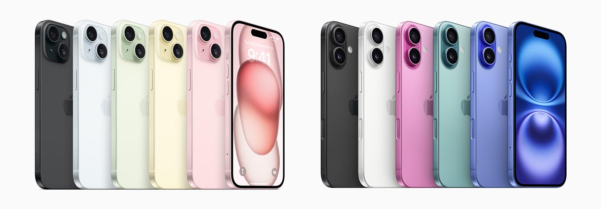
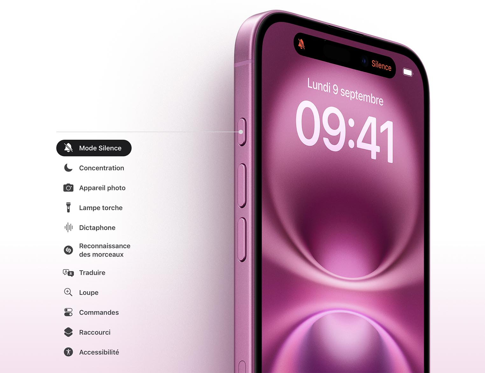

Comparaison du design :
Le design de l’iPhone 16 a été affiné par rapport à celui de l’iPhone 15, avec des bords plus fins, un boîtier légèrement plus mince et un écran plus grand qui occupe davantage de l’espace avant. De plus, le cadre est en acier inoxydable, et il existe de nouvelles couleurs plus modernes, telles que le bleu nuit et l’or rose.
Dimensions et poids :
- iPhone 16 : 146,7 x 71,5 x 7,4 mm, 174 g
- iPhone 15 : 146,7 x 71,6 x 7,8 mm, 174 g
Matériaux :
L’iPhone 16 utilise des matériaux de haute qualité, avec un dos en verre renforcé et un cadre en acier inoxydable qui lui confèrent un aspect premium. Le modèle iPhone 15, bien qu’également en acier inoxydable et verre, a un design plus épais et moins raffiné.
Couleurs disponibles :
- iPhone 16 : Bleu nuit, or rose, argent, gris sidéral
- iPhone 15 : Noir, blanc, or, bleu
Photos comparatives :
 À gauche, le design de l’iPhone 16, et à droite, celui de l’iPhone 15. On peut noter les bords plus fins de l’iPhone 16 ainsi que son écran légèrement plus grand.
Comparaison des matériaux :
| Caractéristique | iPhone 16 | iPhone 15 |
|---|---|---|
| Matériaux du cadre | Acier inoxydable | Acier inoxydable |
| Matériaux du dos | Verre renforcé | Verre renforcé |
| Épaisseur | 7,4 mm | 7,8 mm |